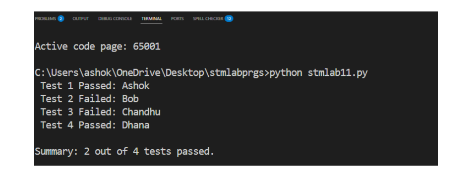

from selenium import webdriver
from selenium.webdriver.common.by import By
from selenium.webdriver.common.action_chains import ActionChains
import time
driver = webdriver.Chrome()
try:
driver.get("https://www.google.com")
driver.maximize_window()
print("=== Context-Sensitive Recording ===")
search_box = driver.find_element(By.NAME, "q")
search_box.send_keys("Selenium Automation Testing")
search_box.submit()
time.sleep(2)
print("Search completed successfully")
print("\n=== Analog Recording ===")
actions = ActionChains(driver)
actions.move_to_element(search_box).click().perform()
time.sleep(2)
print("Analog movements completed")
finally:
driver.quit()
Input:
Website: https://www.google.com
Search text: Selenium Automation Testing
Output:
=== Context-Sensitive Recording ===
Search completed successfully
=== Analog Recording ===
Analog movements completed
----------------------------------------
11) Data driven batch Aim: To perform batch execution of test cases using external test data sources, enabling efficient validation of application functionality across multiple data sets. Code import csv # Define validation function def validate_user(name, email, status): if not email: return False if status not in ['active', 'inactive']: return False return True # Step 1: Load data from CSV with open('test_cases.csv', newline='') as file: reader = csv.DictReader(file) total = 0 passed = 0 for i, row in enumerate(reader, 1): name = row['name'] email = row['email'] status = row['status'] total += 1 # Step 2: Execute validation if validate_user(name, email, status): print(f" Test {i} Passed: {name}") passed += 1 else: print(f" Test {i} Failed: {name}") print(f"\nSummary: {passed} out of {total} tests passed.") output:
